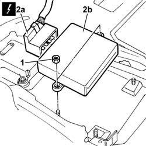

5580E70 Passive entry system electronic control unit - R.R.
- Path
- Procedures > 55 ELECTRICAL EQUIPMENT > 5580 SPECIAL ACCESSORIES > 5580E ANTI-THEFT DEVICE > 5580E70 Passive entry system electronic control unit - R.R.
- Kind
- repair procedure (removal / refitting; the operation number is the code)
- Applies to
- all engines; all production periods
- Interactive page
- https://sloeber94.github.io/elrnDB-lThss/en/#/150989
Applies to: all engines; all production periods
 Removing
Removing
 Refitting
Refitting- Disconnect the negative battery terminal.
- [5540D19]
See in Op. 7040L70 Tunnel cover REAR COVER - R.R.
See in Op. 5010C32 Air VENT in tunnel cover for rear seats
See in Op. 7040A65 passenger compartment box lock , one , r r
See in Op. 7040A65 passenger compartment box lock , one , r r
See in Op. 7045A10 FRONT SEAT (one) left or right - R.R.
See in Op. 7040L37 GEAR LEVER SURROUNDING TRIM - R.R.
See in Op. 7040L20 TUNNEL COVER - R.R.
1. Undo the fixing nuts.
- Disconnect the electrical connector (2a) and remove the passive entry electronic control unit (2b).
 | Description | Connector |
|---|---|---|
2a | Passive entry control unit (NPE) | M064 |

Applies to: all engines; all production periods
Refitting
Removing- Connect the electrical connector and place the passive entry electronic control unit in the housing.
| Description | Connector |
|---|---|---|
. | Passive entry control unit (NPE) | M064 |
- Tighten the nuts fixing the passive entry electronic control unit.
See in Op. 7040L20 TUNNEL COVER - R.R.
See in Op. 7040L37 GEAR LEVER SURROUNDING TRIM - R.R.
See in Op. 7045A10 FRONT SEAT (one) left or right - R.R.
See in Op. 7040A65 passenger compartment box lock , one , r r
See in Op. 5010C32 Air VENT in tunnel cover for rear seats
See in Op. 7040L70 Tunnel cover REAR COVER - R.R.
- [5540D19]
- Connect the negative battery terminal.
Topics linked from this page (6)
- 5010C32 Air VENT in tunnel cover for rear seats
- 7040A65 passenger compartment box lock , one , r r
- 7040L20 TUNNEL COVER - R.R.
- 7040L37 GEAR LEVER SURROUNDING TRIM - R.R.
- 7040L70 Tunnel cover REAR COVER - R.R.
- 7045A10 FRONT SEAT (one) left or right - R.R.